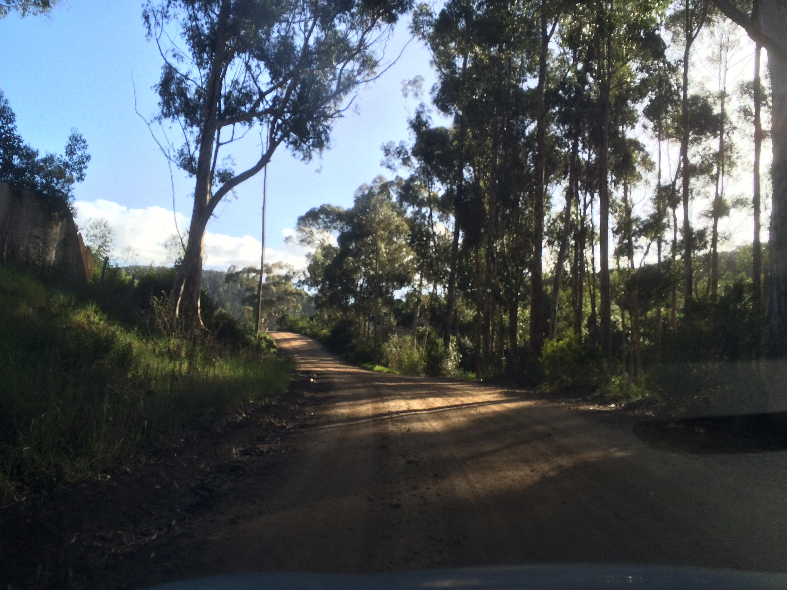
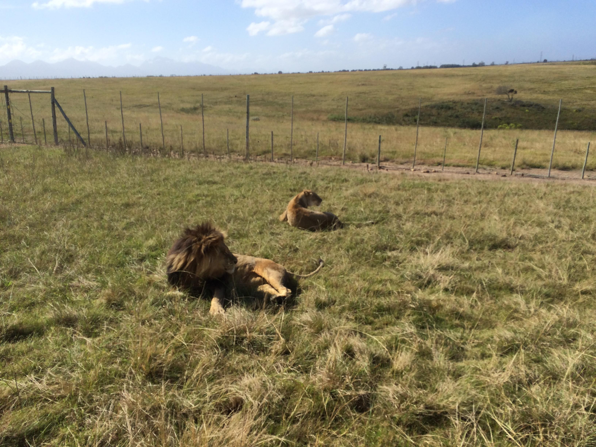
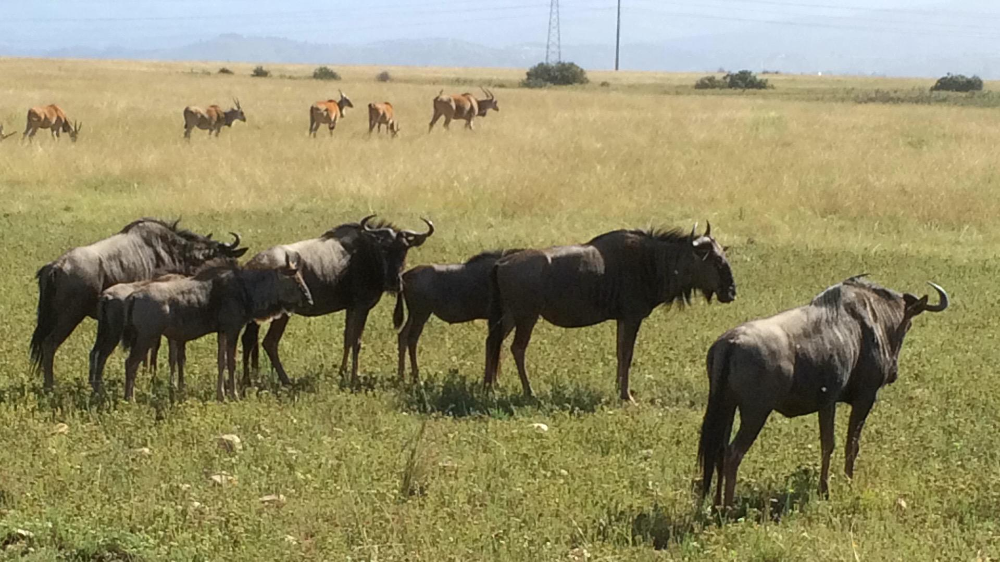
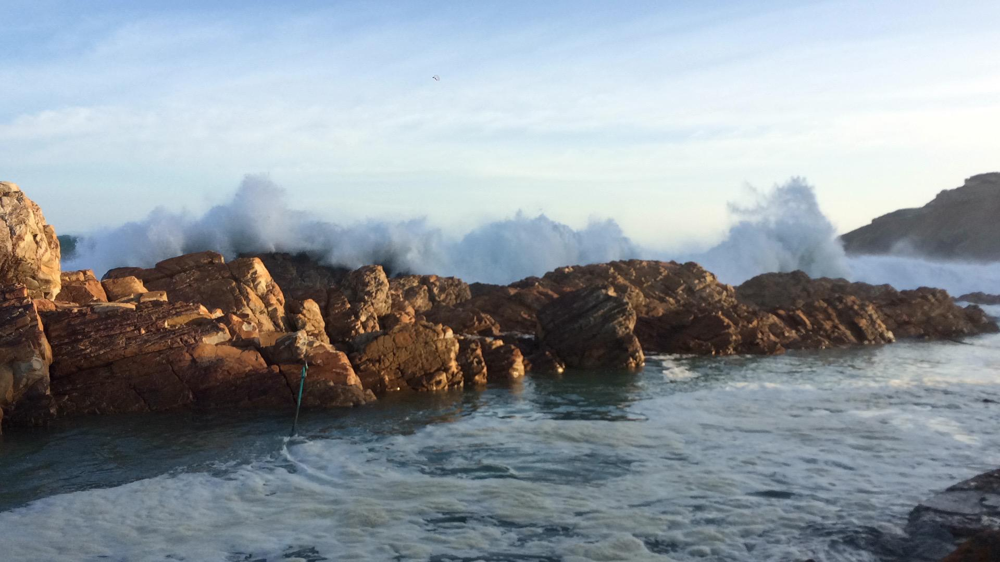

Tag 15 – Botlierskop
By Evita Bley
Heute machen wir Tourismus. Wir sind in Afrika, was kann man also besseres tun als eine Safari? Also auf geht’s. Gestern haben wir herausgefunden, dass es einen Game Park ganz in der Nähe gibt (Botlierskop). Und sie haben die Big Five, zumindest einige davon und noch viele andere Tiere. Als klar wurde, dass ich nach Afrika fahre, hatte ich zwei Sachen, die mir wichtig waren. Ich wollte mir eine neue Handtasche kaufen (meine fällt buchstäblich auseinander) und ich wollte Elefanten sehen, so richtig in echt und nicht im Zoo. Es sind jetzt 15 Tage vergangen … was soll ich sagen, eine Handtasche ist noch nicht gefunden und es sieht auch nicht sehr gut aus. Also vielleicht wenigstens die Elefanten?
Nunja, als wir nach Mossel Bay fuhren habe ich tatsächlich sehr weit weg auf der linken Seite auf einem Feld zwei Elefanten gesehen, ich bin mir ganz sicher und ich bin schier ausgeflippt. Martin hat ein Video gemacht, aber leider muss man sehr viel Fantasie haben, um zu sehen, dass da Elefanten sind. Ich schwöre, ich habe sie gesehen!

Heute also der zweite Versuch. Aber erst einmal müssen wir dahin fahren. Nach einer halben Stunde schickt uns unser Navi auf eine Straße, die mal wieder etwas weniger asphaltiert ist. Unser Auto macht einen super Job und so schaffen wir es auch über diesen Weg. Unser Glück ist, dass es die Nacht zuvor geregnet hat. Das heißt der Boden ist ein bisschen feucht und es wirbelt kein Staub hoch. Das wird uns auch später bei der Safari sehr zugute kommen.
Rechts auf einer Wiese stehen Nashörner. Schön ist das, bis wir merken, dass zwischen uns und den Nashörnern kein Zaun ist … Nunja die Treppe zur Terrasse, auf der wir warten bis die Safari losgeht, werden sie ja nun nicht hochkommen, also genießen wir noch ein Heißgetränk und lassen uns die Sonne auf den Kopf scheinen.
Die Safari ist in so einem offenen Truck mit ca. 30 Sitzplätzen. Als erstes fahren wir an die Nashörner etwas näher ran. Die sind schon echt groß und wenn sie losrennen hat man ein größeres Problem. Hier gibt es eine kleine Familie Nashorn, Mama, Papa, Kind, sehr süß :)

Als nächstes ab in die Pampa. Ich glaube sie haben die Wege mit Absicht so hügelig gebastelt, damit das Safarigefühl authentischer wird. Ich jedenfalls könnte darauf gut verzichten, ich mag Achterbahnen nicht und ich bin ein sehr schlechter Beifahrer, hier kommt beides zusammen. Also kralle ich mich am Truck fest und hoffe, dass wir nicht umfallen.
Die Giraffen, die wir gleich zu Gesicht bekommen, machen das aber alles wieder wett! Boah sind die toll! Und es ist schon ein eher merkwürdiges Gefühl, wenn man theoretisch die Hand ausstrecken könnte und so einer Giraffe die Flanke streicheln kann. Ich mag Giraffen habe ich beschlossen.
Weiter geht die wilde Tour. Als nächstes sind die Elefanten dran … da sind sie … oder doch nicht? Unser Guide sagt, sie haben noch zwei Elefanten und einen außerhalb des Parks. Da ich kann sie sehen, aber sie sind sehr weit weg :( Trotzdem ist es süß zu sehen, wie das Elefantenkind um seine Mama herumläuft und sie währenddessen schläft und ab und zu mit den Ohren schlackert.
Vielleicht ist es auch ganz gut, dass man nicht zu nahe an den „Tierchen“ dran ist. Schießlich sind es auch keine Spielzeuge sondern Lebewesen mit ihren eigenen Gewohnheiten und so weiter. Und wenn so ein Elefant sauer wird, ich denke dass man dann eh ganz froh ist, nicht in der Nähe zu sein.
Also fahren wir weiter und kommen nun in etwas hügligeres Gebiet. Also weniger „waldig“ und mehr Feld. Immer rauf und runter wirklich lange. Und zwischendurch gibt es Bonteboks, Springböcke, Eland (mit dem Ring am Hintern).

Und hepp schon sind wir durch ein Tor in einen extra abgezäunten Bereich gefahren und befinden uns bei den Löwen. Die sind schon groß! Aber auch irgendwie putzig. Ich will auch den ganzen Tag schlafen! Die Löwin wacht auf und guckt herum. Und kurze Zeit darauf erwacht auch Herr Löwe und schaut verträumt durch die Gegend. Also so verträumt wie ausgewachsene Löwen halt so schauen …
Wieder raus aus dem Gehege und auf zu den Zebras. Zebras … joa die sehen halt aus wie Zebrastreifen in 3D. Wir hatten drei Stück direkt vor der Nase. Ich glaube ja, dass das eine nicht echt war, weil es sich nicht einen Meter bewegt hat, in der Zeit wo wir da waren. Es poste da so vor sich hin und wir konnten schön Fotos machen.

Die Wildebeest (Gnu) und dahinter ein paar Eland, das war beeindruckend. Zwei Herden verschiedener Rassen so dicht beieinander. Das hat mir gut gefallen und auch diese sehen ganz schön imposant aus von nahem.
Ich habe sicher etwas vergessen. Aber das sind zumindest die beeindruckendsten gewesen, so dass sie mir im Kopf bleiben. Wieder zurück am Ausgangspunkt (nach wohlgemerkt drei Stunden!) gibt es erst einmal lecker Mittagessen und ich frage mich, welches Tier für meinen Burger von den zuvor gesehenen dran glauben musste …
Wir entscheiden uns nach ausgiebigem Dösen auf der Terrasse nach dem Essen für die Rückfahrt und wollen noch ein wenig am Strand in Mossel Bay sein und Meer gucken. Gesagt getan, wir fahren zum Strand, finden auch einen schönen Ort mit einem kleinen Restaurant mit Blick aufs Meer und beobachten kleine Kinder dabei, wie sie Surfen lernen oder besser gesagt, wie man Wellen einschätzt und wie man mit ihnen umgeht. Das ist witzig.
Wir wissen von anderen Leuten im Hostel, dass es einen Surfwettbewerb gibt in Mossel Bay und zwar genau jetzt die Tage. Also machen wir uns auf den Weg, um die Stelle zu finden, wo das stattfindet. Aber leider fahren wir die falsche Straße und in eine Sackgasse. Wir entscheiden uns, doch noch einmal im Hostel nachzufragen.


Wir waren gar nicht so falsch und so machen wir uns noch einmal auf den Weg zum „Point“. Eine Landspitze mit einer wunderschönen Steinküste und herrlichen Wellen zum Surfen. Es gibt einen Leuchtturm und kleine Stege zu viel zu weit im Meer liegenden Steinen. Die Wellen sind heute schon wirklich hoch und so ist oft einer dieser Stege vom Wasser überspült und man muss eine Weile warten bis es wieder weniger wird. Zwei Jungs (einer mit einer Spiegelreflexkamera) haben es leider nur bis zur Mitte geschafft … so mussten sie ungefähr eine Minute mit den Füßen im Wasser und auf einem glitschigen Steinsteg ausharren, bis sie weiter gehen konnten. Sehr amüsant für alle Umstehenden.
Im Hostel zurück wird noch gequatscht, Bier getrunken und ausgeruht. Morgen geht es schließlich auf ein ganz anderes Abenteuer. Aber davon dann morgen mehr.